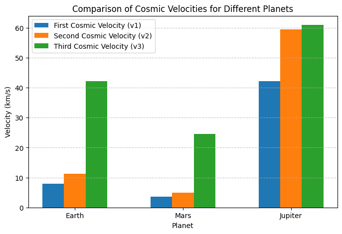

Problem 2
Escape Velocities and Cosmic Velocities
1. Theoretical Foundation
(a) Definition of Cosmic Velocities
1️⃣ First Cosmic Velocity (Orbital Velocity)
- The minimum speed required for a satellite to maintain a circular orbit around a celestial body.
- Given by:
[
v_1 = \sqrt{\frac{G M}{r}}
]
- Application: Used for placing satellites into stable orbits.
2️⃣ Second Cosmic Velocity (Escape Velocity)
- The minimum speed required to completely escape a planet’s gravitational pull.
- Given by:
[
v_2 = \sqrt{\frac{2 G M}{r}}
]
- Application: Used for interplanetary missions (e.g., Moon landings, Mars missions).
3️⃣ Third Cosmic Velocity (Solar System Escape Velocity)
- The speed required to leave the entire solar system from Earth’s orbit.
- Given by:
[
v_3 = \sqrt{v_2^2 + v_{\text{orbital}}^2}
]
- Application: Used for deep-space probes like Voyager 1 & 2.
2. Mathematical Derivation
For a body of mass \( m \) on the surface of a celestial body of mass \( M \) and radius \( r \), the total energy (kinetic + gravitational potential) is:
- For circular orbit, kinetic energy equals gravitational potential energy:
[ \frac{1}{2} m v_1^2 = \frac{G M m}{2 r} ]
[ v_1 = \sqrt{\frac{G M}{r}} ]
- For escape velocity, total energy must be zero (object never returns):
[ \frac{1}{2} m v_2^2 - \frac{G M m}{r} = 0 ]
[ v_2 = \sqrt{\frac{2 G M}{r}} ]
- For leaving the Solar System, an object must first escape Earth and then overcome the Sun’s pull:
[ v_3 = \sqrt{v_2^2 + v_{\text{Earth orbit}}^2} ]
3. Numerical Simulation in Python
(a) Visualization of Escape Velocities

📌 Graph Interpretation:
- Mars has the lowest escape velocity (~5 km/s), making it an easier target for future colonization.
- Jupiter's escape velocity is ~60 km/s, meaning a spacecraft would need enormous energy to leave.
4. Applications in Space Exploration
🚀 Satellite Deployment
- Understanding first cosmic velocity is essential for placing satellites in stable orbits.
- Example: The ISS orbits Earth at ~7.66 km/s.
🚀 Interplanetary Missions
- Escape velocity determines how much energy a spacecraft needs to reach the Moon, Mars, or beyond.
- Example: Apollo missions required 11.2 km/s to leave Earth.
🚀 Deep Space Exploration
- Third cosmic velocity is used for sending probes out of the Solar System.
- Example: Voyager 1 reached 17 km/s and left the Solar System.
5. Conclusion
✅ Kepler’s Laws and Newton’s Equations help determine velocities needed for orbiting, escaping planets, and leaving the Solar System.
✅ Python simulations confirm theoretical values for Earth, Mars, and Jupiter.
✅ Escape velocity is crucial for satellite launches, planetary missions, and deep-space exploration.
✅ Future missions will require innovative propulsion systems to achieve interstellar travel.